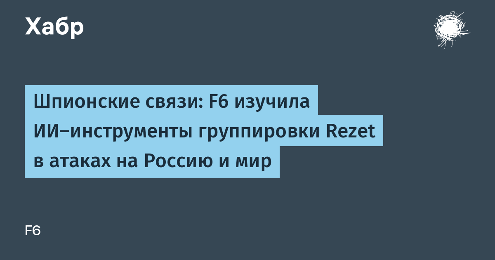

Компания F6, российский разработчик технологий против киберугроз, представила исследование атак группировки Rezet (она же RareWerewolf, LibrarianGhouls, LibrarianLikho). Она активна как минимум с конца 2018 года и охотится на компании России, Беларуси и Казахстана: основной вектор — целевые фишинговые письма с вложениями, замаскированными под акты, договоры и коммерческие предложения. По данным F6, в 2026 году Rezet — самая активная группировка, атакующая Россию, и одна как минимум из девяти прогосударственных групп, которые в январе–октябре 2026 года применяли инструменты, созданные с помощью ИИ.
Главная находка — панель управления AnyDoor: она собирает вредоносные файлы для писем, рассылает их массово, показывает статистику по кампаниям и даёт доступ к заражённым устройствам. О том, что панель написана нейросетью, исследователей убедили комментарии в коде, стилистика элементов и характерные ошибки в логике скриптов. Осенью атакующие перенесли панель на другой хост, но аналитики F6 нашли её снова и узнали внутренние названия кампаний и файлы-приманки — например, рассылку с опечаточными названиями «Безпелтники» и кампанию «Нефтегаз».
В сентябре 2026 года F6 зафиксировала волну фишинга против России, Беларуси, Казахстана и Узбекистана — под удар попадали промышленность, логистика, биотехнологии, финансы, страхование, здравоохранение, ретейл и НИИ, единичные письма уходили в Европу, Азию, Африку и Америку. В одной кампании число адресатов превышало 4800, причём 85% адресов одной из баз принадлежали доменам зоны .ru; общее число получателей писем через AnyDoor превысило 7000, а домены получателей относятся к 25 национальным зонам. Аналитики F6 подчёркивают: ИИ-инструменты пока применяются в пилотном режиме и дорабатываются, но модель атак уже используется вовсю.
Практический вывод из отчёта простой: массовый фишинг становится дешёвым и автоматным, поэтому «проверенного контрагента» в письме всё меньше. Проверьте, что почтовый шлюз фильтрует вложения — самораспаковывающиеся архивы и EXE под видами документов, — отключите выполнение программ из почтовых вложений на рабочих станциях и научите сотрудников настораживаться от любых «актов» и «договоров» с паролями в письме. Индикаторы компрометации из отчёта F6 стоит завести в свои средства обнаружения вторжений.
Полный текст исследования и индикаторы F6 публикует у себя на сайте; в рассылке группировки фигурировали и адреса европейских организаций — например, польского новостного портала, так что проблема не ограничивается одним регионом.